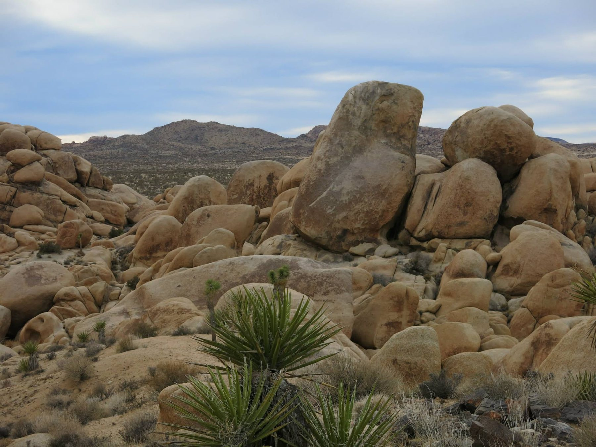
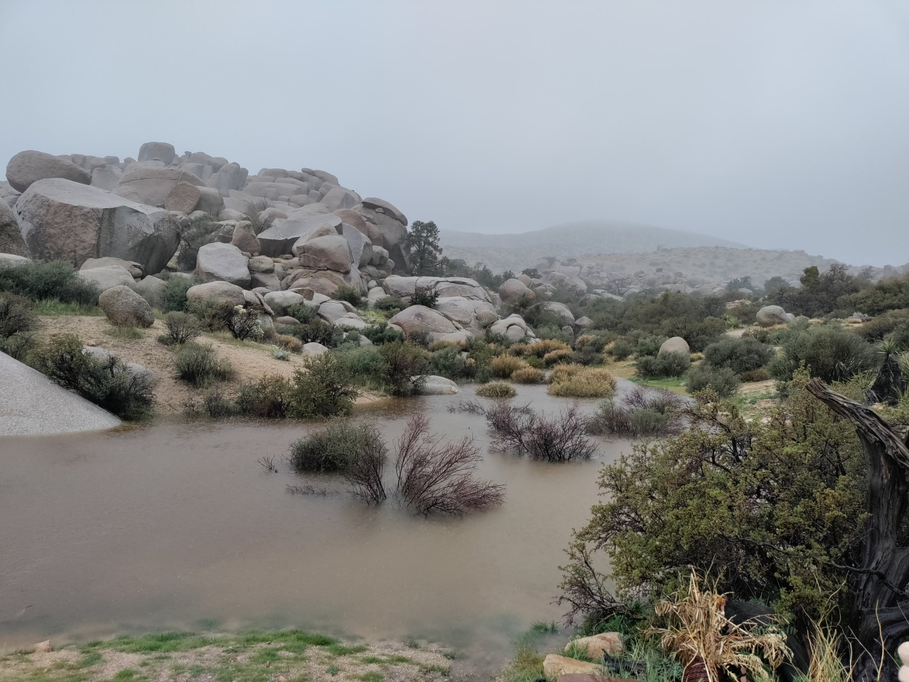
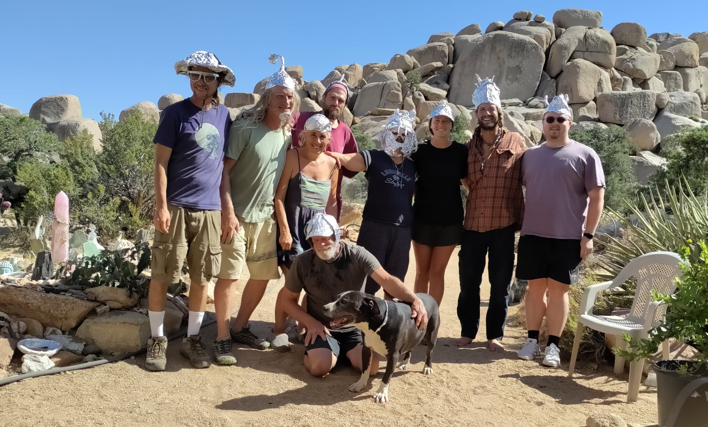

The projects make the most sense when they stay attached to the places, people, problems, and periods of life that produced them.

Boulder Gardens — land is not merely the background to the work; it is one of the subjects.
01
A working index
Different projects. Recurring questions.
How does water move? How do people make a place together? What can be built with what is already available? How much infrastructure is enough? What is worth recording before it disappears?
This page gathers the larger threads. Some have their own websites. Some will grow into deeper chapters. Others may remain a photograph, a field note, or a small practical experiment.
02
Current & continuing
Work that is still alive.

Place · Mojave Desert
Boulder Gardens
A sanctuary, community, landscape, and working field site. The questions here range from desert ecology and water to shelter, communications, power, maintenance, and how to read a large piece of land by walking it.
A practical system for turning daily work into a lasting record: photographs, measurements, maps, sensors, reports, equipment notes, and revisions.
Field Reports archive in development
Off-grid systems
Energy & infrastructure
Solar arrays, batteries, networking, sensors, radio, water monitoring, and the less glamorous repairs that determine whether an off-grid system actually works.
Shelter · As-built record
The Bird House
A tiny one-person sleeping shelter whose odd geometry, dimensions, materials, and future improvements are being documented rather than left to memory.
Communications
Connecting a scattered place
Long-distance Wi-Fi, Ethernet, relays, radio, and other small pieces of infrastructure that make a physically dispersed desert site function as one connected system.
03
Earlier chapters
The work has a history.
Upper Ojai · Permaculture · Community
Full Circle Paradise
A long experiment in intentional community and permaculture: gardens, food, water, natural building, shared work, fire, recovery, relationships, and the challenge of documenting a whole place rather than only its successes.
Cob, earthen construction, workshops, and the social process of learning by making something tangible together.

People · Community
Life made with others
Intentional communities, gatherings, field trips, shared work, hospitality, teaching, friendship, and the practical side of living around other people.
04
A method that keeps returning
Read the land by being on it.
Boulder Gardens — terrain, vegetation, distance, exposure, and access become clearer on foot than on a screen.
Walking is one of the field tools.
Perimeter walks, route finding, water observations, photography, maps, and repeated visits turn a large landscape from an abstraction into something gradually legible.
The same instinct applies elsewhere: understand the actual place before designing the system that is supposed to live there.
05
Places in the larger archive
The map is still being filled in.
Switzerlandfamily beginnings
Moroccoformative years
Antiocheducation
U.S. Navyservice
Californiateaching & community
Upper OjaiFull Circle Paradise
Mojave DesertBoulder Gardens
The older photographic archive is still being digitized and dated. As those photographs become reliable, these place markers can turn into full visual chapters.
The point of the index
Keep the connections visible.
Land, community, building, technology, archives, teaching, travel, and fieldwork are not separate interests here. They keep informing one another.